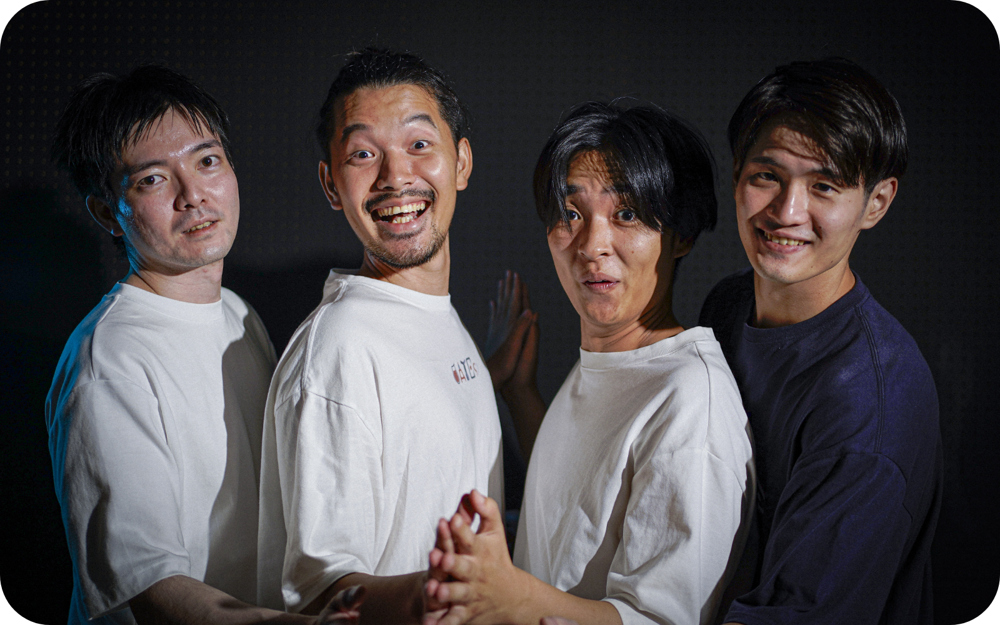

様々なデートプランを調べること、プランについてコメントすること、また自らが投稿することが可能なUCG型プラットフォームサイトとなっております。
エリア、スポット、予算、タイプ（日帰り、泊り、ナイトデート）、さまざまなタグ（「雨の日デート」「家デート」など）から検索することができます。

地図情報やスポットの写真、スポットごとの説明などの基本情報に加え、レビュー機能を使うことで投稿者また他のレビュワーからデートの極意を聞くことができます。
投稿することで同じデートを体験した方からのレビューや、そのエリアに詳しい方から近隣のおすすめスポットを聞けたり、様々な恩恵が得られます。
1995年生まれ。新卒で通信事業社に入社し、M&AやマーケティングDXに従事。その傍らで、外資IT企業などでデザイナーとして事業参画。2019年、同僚であった小泉と本プロジェクトを始動、複数回のピボットの末、デート投稿、レビューサイト"DATEs"をリリース。
1992年生まれ。通信事業社にオウンドメディアのPdMとして新卒入社。2021年に退職後、人材系会社にてUXデザイナーとしてプロダクトエンハンスを担当。その傍らで地方企業のwebコンサルも手がける。サービス全体設計とフロントエンド開発担当として"DATEs"リリースに携わる。
1996年生まれ。大学卒業後、HR系スタートアップの会社にエンジニアとして参画する。その後D2C会社のCTOを務め、現在はフリーランスとして活動中。"DATEs"の開発業務を担当している。
事業連携、インターン等のお問い合わせは以下までお願いいたします。
